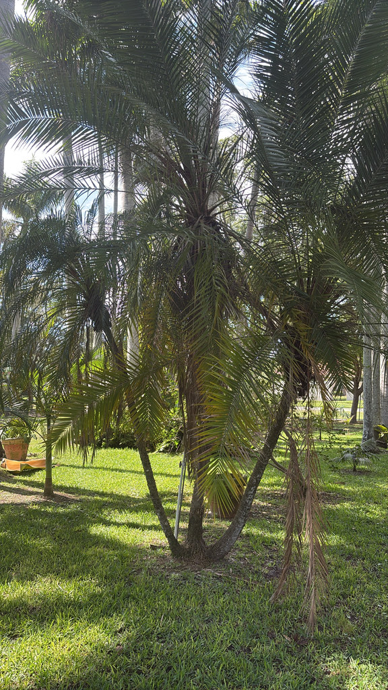

- Despite being called a date palm, the fruit is almost entirely seed — the edible flesh is so thin you'd need a lot of patience and a very small appetite to make a meal of it.
- This palm is dioecious: only female trees produce fruit, and only if a male is nearby. The two sexes look identical until one of them flowers.
- In the wild it grows on steep riverbanks along the Mekong River system, anchoring into cliff faces and seasonal floodplains — a far cry from the manicured entryways it's famous for.
- Most multi-trunk specimens you see in Florida landscapes are actually several individual trees planted together — in cultivation, this palm rarely suckers on its own.
Native to a narrow band of mainland Southeast Asia: Yunnan Province in southwestern China, northern Laos, and northern Vietnam, where it colonizes riverbanks, seasonal floodplains, and rocky cliff faces along the Mekong River system. Wild populations are increasingly threatened by dam construction and habitat modification.
The species was introduced to Western horticulture in the late 19th century — the botanical name honors Carl Roebelen, a plant collector who brought specimens to the attention of European botanists. It arrived in Florida landscapes as part of the broader tropical-palm trade and is now one of the most commonly planted small palms in the state.
- The Pygmy Date Palm occupies a curious middle ground in Florida horticulture: it is everywhere, yet almost nobody knows where it actually comes from. Its native home is a thin corridor of steep, seasonally flooded riverbanks along the Mekong system in Laos, southern China, and northern Vietnam — habitats defined by periodic inundation, rocky substrates, and damp cliff faces.
- The polished landscape specimens lining Florida driveways bear little resemblance to those wild origins, but the preference for moisture and the tolerance for variable soil conditions are direct inheritances from that riverine past.
- Pay close attention to the base of the fronds: what look like the first few leaflets are actually modified into sharp, 2–3-inch spines — a feature shared by all date palms in the genus Phoenix. Handle with care. UF/IFAS also notes that older specimens develop a conspicuous mass of aerial root initials at the base of the trunk — a subtle but telling detail once you know to look for it.
- The trunk itself is slender (3–6 inches in diameter), often slightly crooked, and covered in distinctive peg-like leaf bases that give it a pleasingly textured, almost hand-crafted appearance.
- Gardeners sometimes wonder why their multi-trunk Pygmy Date Palm never produces fruit.
- The answer is usually one of two things: either all the trunks are from the same individual (this palm is dioecious — male and female flowers are on separate trees), or the grouping happens to contain only males. Because the sexes are indistinguishable until flowering, fruit production in a single planting is never guaranteed.
- First flowering typically occurs around 5–7 years from seed under good growing conditions.
When it flowers in spring, the Pygmy Date Palm's cream-colored inflorescences are visited by bees attracted to the scent and pollen. Its value as a pollinator resource is modest but real, particularly in otherwise paved or manicured settings where floral resources are sparse.
UF/IFAS classifies the fruit as not significantly attracting wildlife, reflecting that the thin-fleshed drupes offer little reward compared to native fruiting palms.
That said, opportunistic songbirds — mockingbirds, catbirds, and robins in particular — will occasionally forage on the ripe black drupes in autumn when other fruit is scarce, so a fruiting female is not without value in a mixed planting.
Primarily by seed. In the wild this palm can produce offshoots (suckers) at its base, but most cultivated individuals do not sucker. Multi-trunk landscape specimens are typically two to five separate palms planted together, their trunks arching gradually outward as they grow.
Cream-colored flowers borne on drooping panicles approximately 12–18 inches long, emerging from among the lower fronds in spring. This palm is dioecious — male and female flowers are produced on entirely separate plants, and the sexes look identical until flowering begins.
Small elongated drupes about ½ inch long, starting red-brown and ripening to dark purple or black, typically between September and October. Each fruit is mostly a single hard seed with only a thin layer of flesh surrounding it.
One seed per fruit, large relative to the fruit size. Seeds germinate readily in warm conditions (above 66°F) and sprout in roughly 2–3 months.
Slender trunk, 3–6 inches in diameter, often slightly crooked, covered in distinctive peg-like leaf base scars. Older specimens develop a mass of aerial root initials at the trunk base. Pinnate fronds 2–4 feet long; basal leaflets are modified into sharp 2–3-inch spines — handle with care.
Start at the base: look for the mass of knobbly aerial root initials that older specimens develop right at the soil line, and notice whether the 'multi-trunk' grouping is actually several individual trees arching away from one another. Run your eye up the slender, peg-textured trunk to the frond bases — the first leaflets closest to the trunk are hard spines, not soft fronds.
In spring, watch for drooping cream-colored flower clusters emerging below the crown. By fall, female plants (if a male is nearby) will carry hanging clusters of small dates ripening from red-brown to deep purple-black.
The small fruits are edible and non-toxic, ripening purple-black with a mild honey flavor — but each is almost all seed, with very little flesh. This isn't the grocery-store date.
The sharp basal spines on the fronds are a physical hazard — handle fronds with care. Don't confuse this palm with the toxic Sago Palm (Cycas revoluta), a look-alike whose seeds are dangerous.
The ASPCA lists it as non-toxic to dogs, cats, and horses. A large quantity of fruit may cause mild stomach upset from the fiber, but that isn't a toxicity concern.
NOMENCLATURE: The species epithet honors Carl Roebelen (1855–1927), a plant collector working for the orchid nursery Sanders of St. Albans, England, who brought specimens to the attention of European botanists. The name is frequently misspelled 'roebellinii' in nursery trade and on ASPCA records — the correct spelling is roebelenii.
FLORIDA CULTURE NOTE: Potassium deficiency is the leading nutrient problem for this species in Florida's alkaline and sandy soils. Symptoms appear as orange discoloration and necrotic tips on the oldest fronds. UF/IFAS specifically cautions against removing potassium-deficient fronds, as doing so accelerates the rate of decline.
COLD AND SALT HARDINESS — WEST COAST FLORIDA CONTEXT: UF/IFAS rates this palm as cold hardy to USDA zone 10A (30°F), though it is widely grown in zone 9B with some risk of frond damage during hard freezes.
Bradenton sits at the northern edge of its reliable cold-hardiness range, making it noticeably more frost-tender than native Sabal palmettos, which shrug off temperatures well into the low teens. UF/IFAS also notes it is not tolerant of salt spray or saline soils — a meaningful limitation for plantings close to the Gulf or bay shoreline.
- © Randall Carter (CC-BY-NC), via iNaturalist